All diagrams generated from Graphviz DOT source code.
Actors, boundary, core and retention use cases.
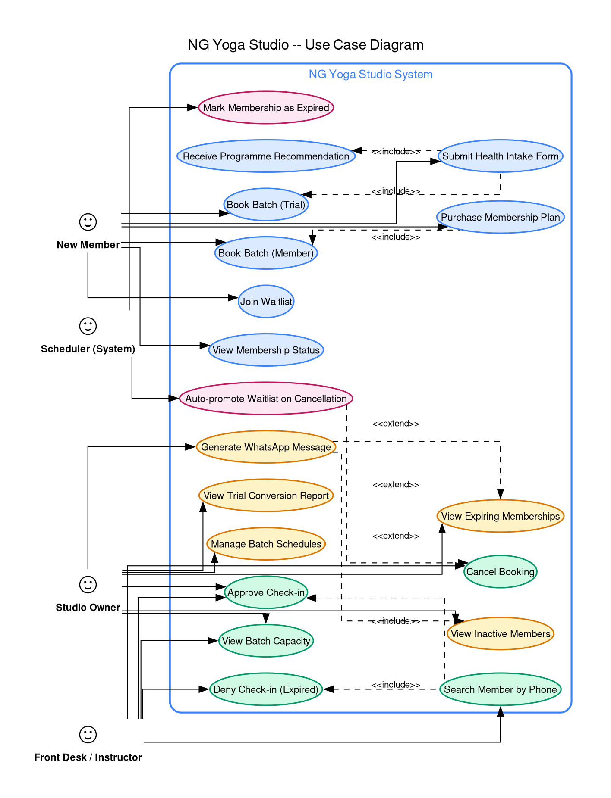
Entities, typed methods, enumerations, associations.
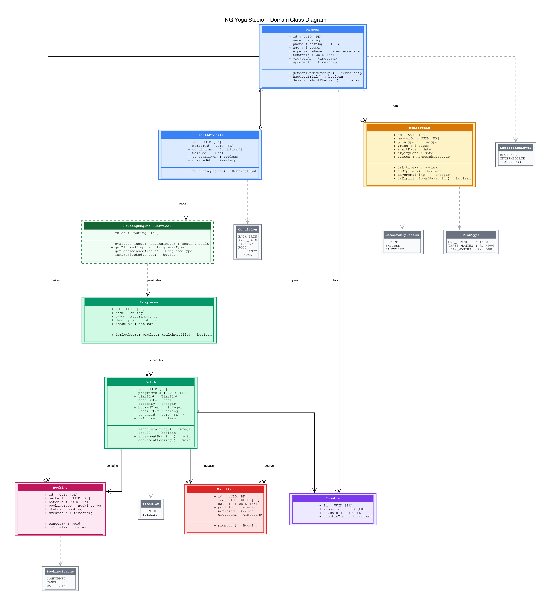
PostgreSQL tables, PKs, FKs, cardinalities, scale hooks.
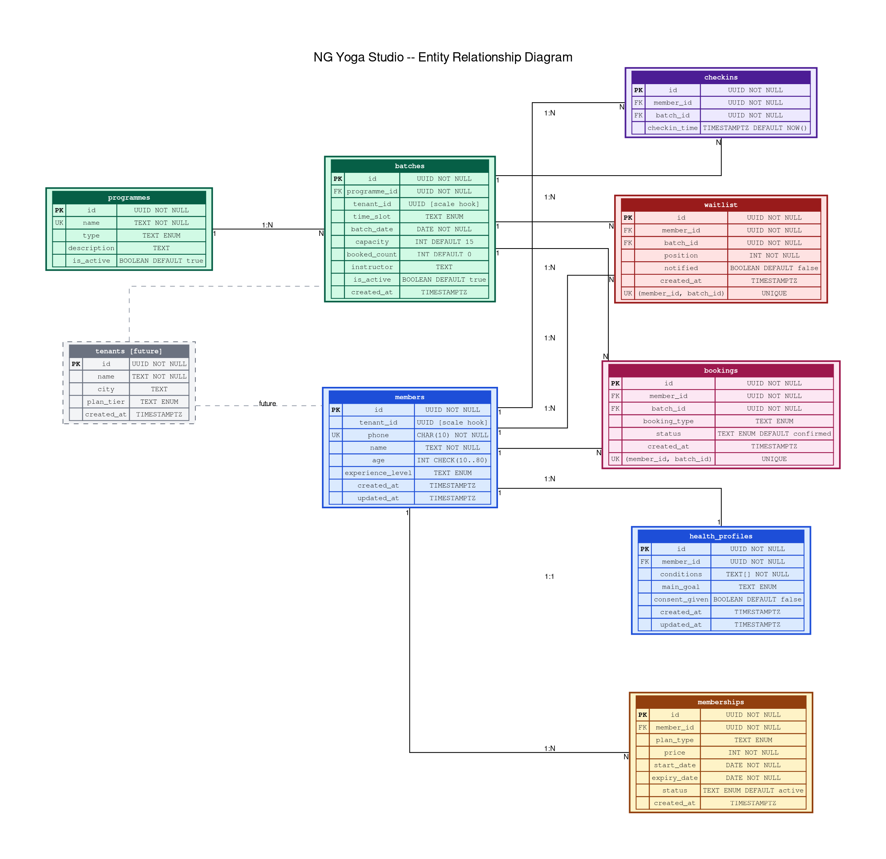
Client/server validation, DB persistence, and routing evaluation.
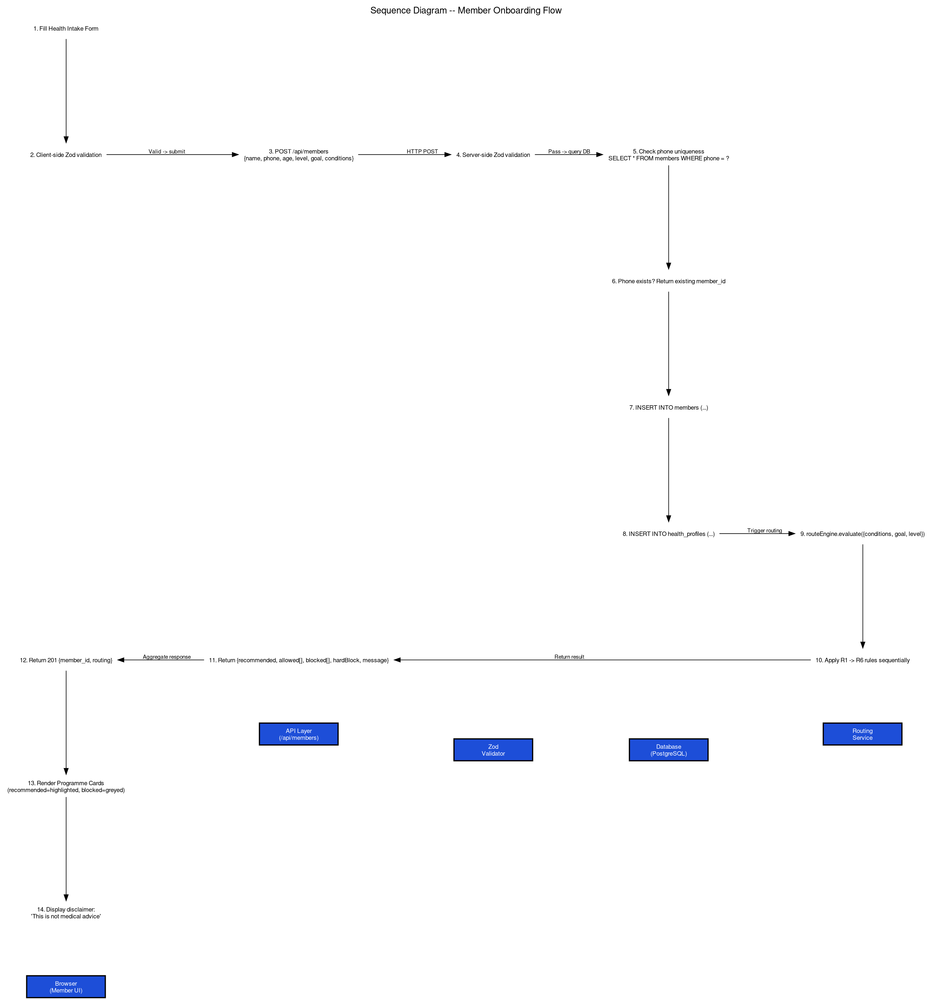
Row-level lock, capacity enforcement, trial checks, and realtime push.
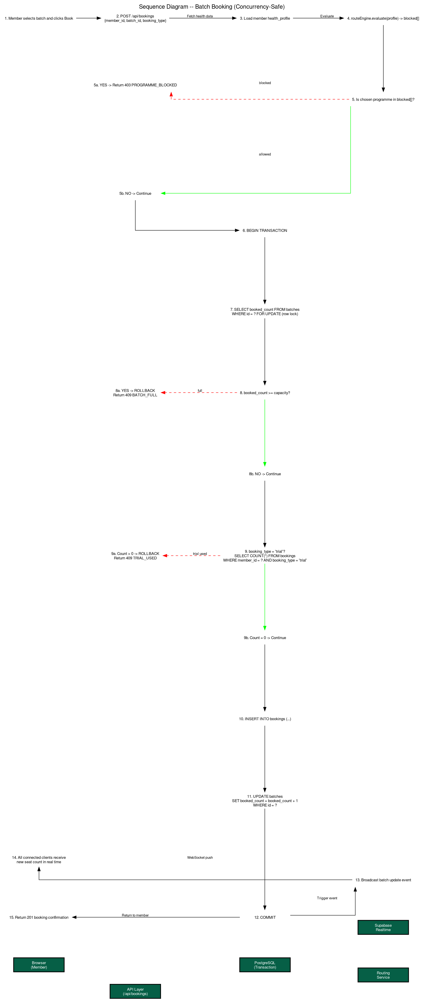
Phone lookup, membership expiry rules (B4), checkin recording.
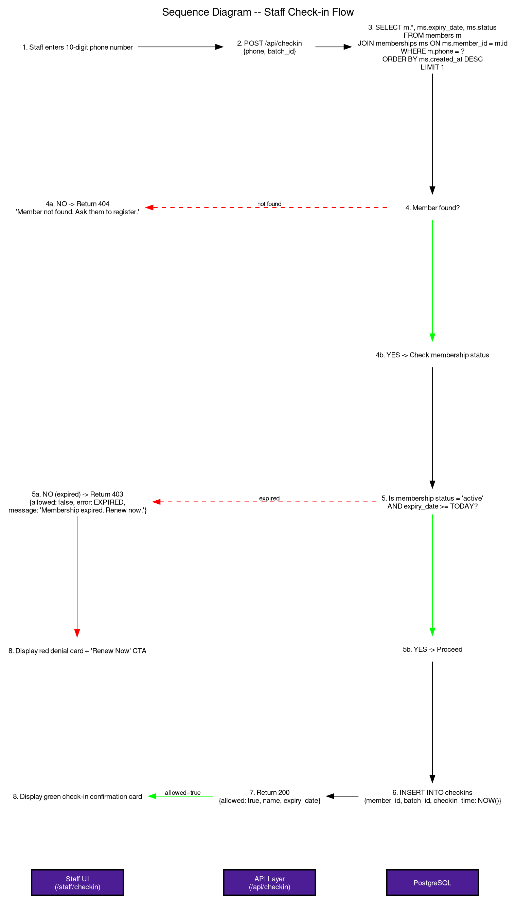
Cancellation chain, auto-promoted booking, and WhatsApp notify trigger.
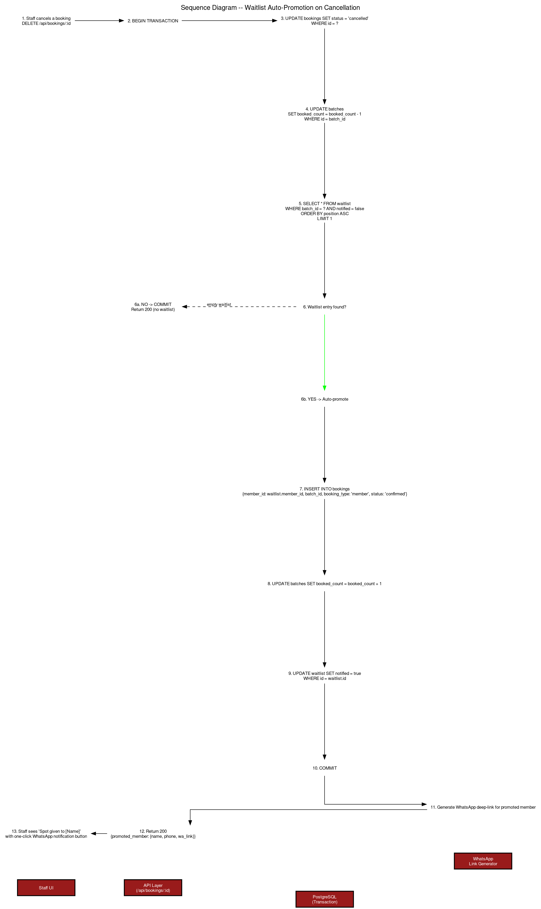
Sequential rule evaluation, pregnancy hard block, and condition priorities.
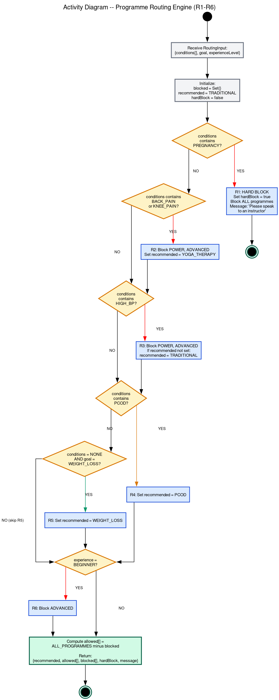
From trial to active, expiring, expired, or renewed.
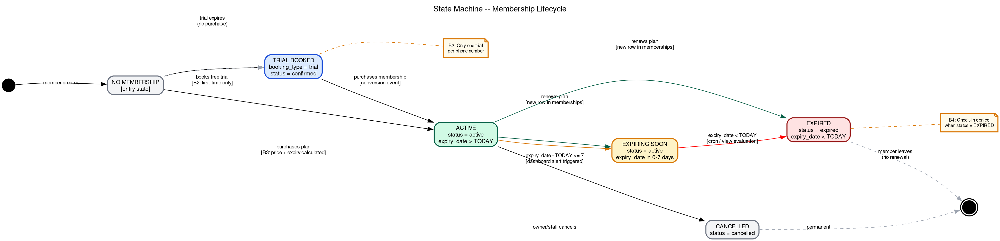
Requested, validated, confirmed, waitlisted, attended, cancelled.
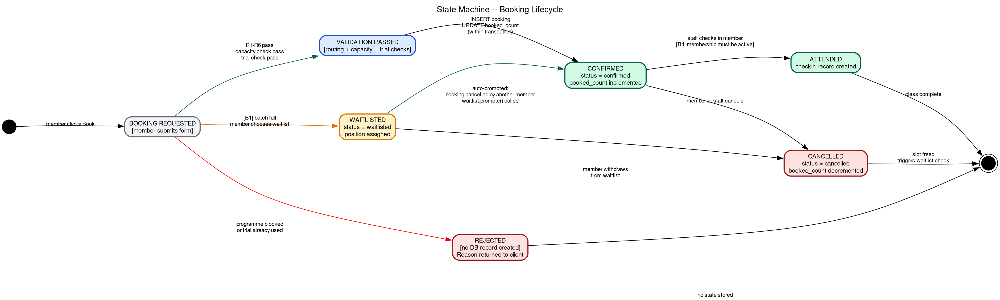
Frontend, API routes, service layer, repositories, Supabase services.
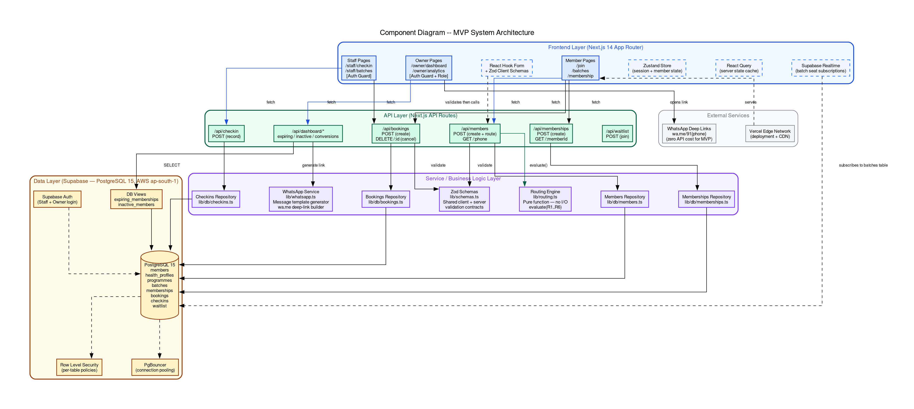
Vercel Edge, Supabase Mumbai, and Redis/BullMQ future scale path.
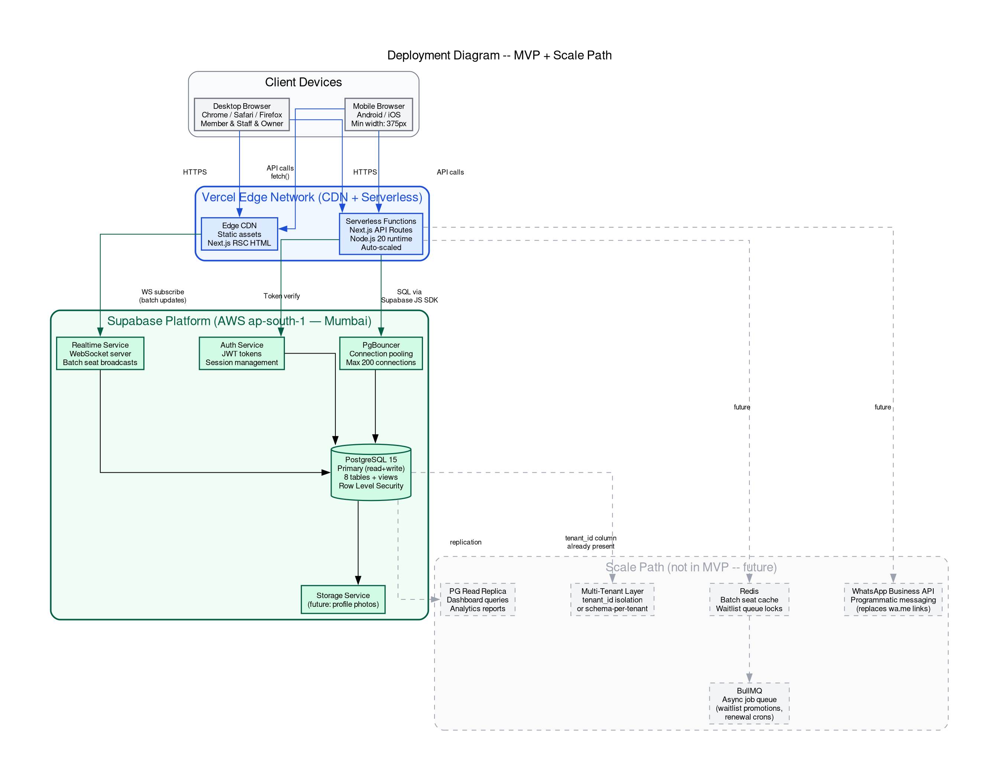
Single studio MVP -> multi-branch -> enterprise franchise SaaS.
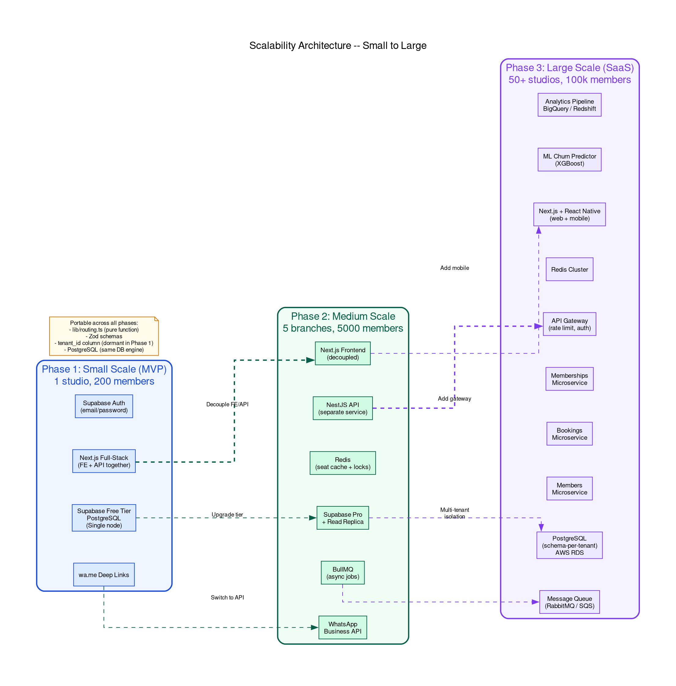
Multi-signal retention triage, tailored WhatsApp re-engagement, and human-led safety moat.
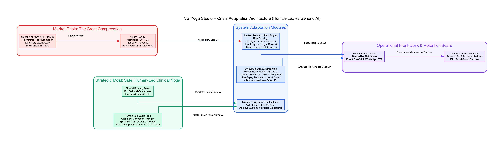